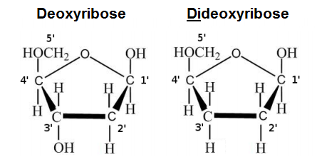

Overview
Materials needed:
-
Single-stranded DNA (ssDNA) sample of the DNA we want to sequence
- The DNA should be amplified (e.g. via PCR) to ensure we have enough DNA in the sample
- Single-stranded DNA can be obtained by using heat to denature double-stranded DNA
- DNA primer
- DNA polymerase
-
Deoxynucleosidetriphosphates (dNTPs)
- dATP, dTTP, dCTP, dGTP
-
Dideoxynucleosidetriphosphates (ddNTPs) labeled either fluorescently or radioactively
- ddATP, ddTTP, ddCTP, ddGTP
- These nucleotides lack a hydroxyl (-OH) group on the 3' end therefore DNA polymerase cannot add nucleotides to these nucleotides. Thus, once a dideoxynucleotide is added, the extension of the DNA strand terminates. That is why these nucleotides are referred to as "chain terminating" nucleotides. The figure below compares deoxyribose (the sugar found in DNA) and dideoxyribose (the sugar found in ddNTPs); note the absence of the 3' OH group in dideoxyribose.
 - These ddNTPs are labeled fluorescently or radioactively so we can view them later.
- Polyacrylamide-urea gel
- So we can view the "chain terminated" strands via gel electrophoresis